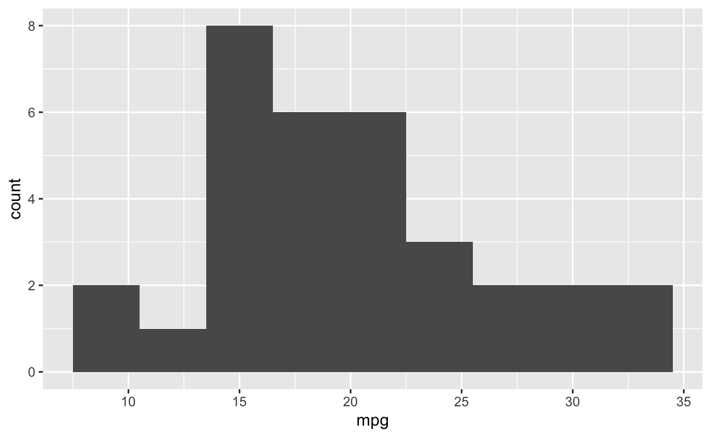
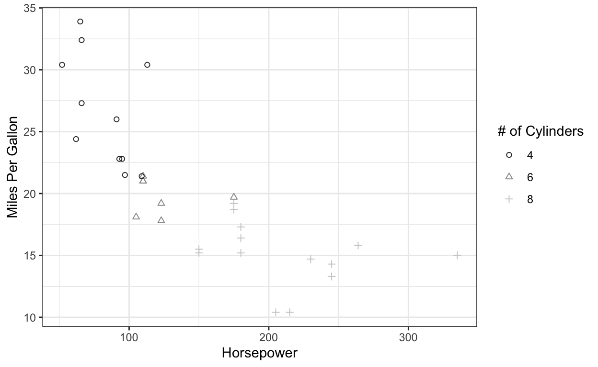

Welcome to the GGplot2 Basics Tutorial!
Introduction
In this Tutorial will cover the basics of plotting your data in R using the package ggplot2.
ggplot2 is a package within the tidyverse that allows us to transform our data into meaningful, publishable visualizations.
Now, as the possibilities in R are limitless, this tutorial will cover the basics of plotting your data in ggplot2. Therefore, this tutorial is for those who know how to input data into R, how to run functions in R, and how to modify their code if issues arise. If you are unfamiliar with these principles of R, I will direct you to my other tutorial (link here).
For this tutorial, you will need to have installed:
- ggplot2
- dplyr
- tidyr
You can do this by running install.packages(‘ggplot2’) followed by library(ggplot2). Repeat this step for dplyr and tidyr.
library(ggplot2)
library(dplyr)
library(tidyr)To begin, a basic ggplot is made up of five units.
Data - The file that contains our data
Aesthetics - The variables that are to be plotted.
Geometries - The type of plot that we want to create.
Scales - Customization of our aesthetics (i.e. variables).
Themes - A method to customize each detail of a plot.
In this tutorial, we will go familiarize ourselves with each of these units, learn how to manipulate these units, and finally, make beautiful data visualizations.
Topic 1 - Data
Its pretty difficult to make a plot without data, so the first thing we will have to do is tell R what we want to visualize.
To do this we are going to load data that is already built into R, the ‘mtcars’ dataset. For your own work, this would be your own data.
data('mtcars')‘mtcars’ is a dataset that was extracted from the 1974 Motor Trends Magazine that details the characteristics of 32 vehicles.
The next thing we’ll want to do is take a look at our data. It often happens that what you think you imported is not what you actually imported. So lets take a look at our variables with the ‘head’ function.
head(mtcars)We can see that our data is numeric and tells us data about the number of cylinders (cyl), horsepower (hp), weight (wt), and 8 other variables for each vehicle.
Below is a typical set of code to make a plot in ggplot
ggplot(data = mtcars) +
geom_point(aes(x = hp,
y = mpg)) 
Here, we can see that as the horsepower (hp, x axis) of a particular vehicle increases, the miles per gallon (mpg, y axis) tends to decrease. This makes sense as Prius’s typically get more to the gallon than a Mustang.
We will ignore the bottom three lines of code and only focus on the ggplot(data = mtcars). In this line, we have told R that we’d like ggplot to look into the mtcars dataset. However, R cannot read minds, so if we only told R to look at the mtcars dataset, it would look like this:
ggplot(data = mtcars)
As we can see above, data is not enough to make a plot. In the next topic, we’ll look into the variables being plotted, also known as the aesthetics.
Topic 2 - Aesthetics
The variables that are displayed are the most important aspect of any plot. They tell the audience what you are researching, the relationship between these variables, and serve as the best method to convey what you are trying to say. If a picture is worth a thousand words, a good plot is worth a thousand citations. In ggplot, the variables that are plotted are called aesthetics. Aesthetics allow us to put our data onto the plot, change the color of those points, alter the shape of each bar, and truly customize our graph so the data shows the most meaning possible.
To see how we can customize a plot, lets go back to our first example.
ggplot(data = mtcars) +
geom_point(aes(x = hp,
y = mpg)) In the example above, our aesthetics are horsepower(hp, x axis) and miles per gallon (mpg, y axis). For now we will ignore the ‘geom_point’ aspect of this line of code.
Notice that in the above example, our aesthetics are within the aes() function. What would happen if they were not?
ggplot(data = mtcars) +
geom_point(x = hp,
y = mpg) ## Error in layer(data = data, mapping = mapping, stat = stat, geom = GeomPoint, : object 'hp' not foundWe recieve an error message. The reason for this is that we did not tell R that we wanted to see mpg and hp on the plot. Not enclosing your aesthetics within the aes() function is one of the most common errors in ggplot, so be certain to check there before you tear your hair out.
Now, what if we wanted to look at another variable? For now, we see that miles per gallon decreases with horsepower, but what if we wanted to include a third dimension to this plot that looks at number of cylinders (cyl)? We add another aesthetic!
Lets take a look at the example below.
ggplot(data = mtcars) +
geom_point(aes(x = hp,
y = mpg,
shape = factor(cyl))) #First, we have to make the cyl variable into a factor. This allows R to look at each number of cylinders as discrete variables and not continuous variablesWe now see that two things occurred.
- We now have three shapes in our plot (circles, 4 cylinders, circle; 6 cylinders, triangle; 8 cylinders, square).
- We have a legend for our plot on the right side.
By adding another variable, we not only see that higher horsepower leads to worse gas mileage, but also that many high mpg/low hp vehicles have 4 cylinders while low mpg/high hp vehicles have 8 cylinders!
Now that we have a better understanding of how aesthetics work, lets do an exercise to add some color to this plot.
Change the code below so that each cylinder is represented by its own color and shape. Like this:
Alter this code to get the above graph. Check the solution once you’ve completed the exercise. 

This is a nice plot, however, it does look like these points are a little small. Let’s see if we can make them a little bigger.
ggplot(data = mtcars) +
geom_point(aes(x = hp,
y = mpg,
shape = factor(cyl),
color = factor(cyl),
size = 3))
It seems that we made the points bigger, however, we also now have size as a variable in our legend, which means we must have plotted size as an aesthetic. Sometimes, plotting size as an aesthetic is helpful, but in this case we only want to change the size of our points.
To do this, we have to make sure we put ‘size = 5’ outside of the aesthetic function, but keep it inside of the geom function.
We can see this below:
ggplot(data = mtcars) +
geom_point(aes(x = hp,
y = mpg,
shape = factor(cyl),
color = factor(cyl)), #note the outer parenthese encloses the second factor within the aes function, but leaves the size = 5 argument outside of the aes function, but inside of the geom_point function.
size = 3) Now that is a good looking plot!
To this point we’ve focused solely on point plots, but what if we want to make other kinds of plots? To do that we have to talk more about…geoms.
Topic 3 - Geometries
Geometries, or geoms as they’re often called, are what tells R what kind of plot we want to work with. The plots that we will go over today are: -Scatter plot = geom_point() -Box and Whisker plot = geom_boxplot() -Histograms = geom_histogram()
We’ve done a lot with scatter plots already, so lets try out a box and whisker plot.
Below we’ve plotted the miles per gallon based on the number of cylinders that a vehicle has.
ggplot(mtcars) +
geom_boxplot(aes(x = factor(cyl), #we need to make cyl into a factor.
y = mpg)) While the scatter plot showed us the relationship between number of cylinders and miles per gallon, the box and whisker plot really shows this relationship! It is good practice to include your points in a box and a whisker plot, but how can we add this to the plot? By adding another geom!
ggplot(mtcars) +
geom_boxplot(aes(x = factor(cyl), #we need to make cyl into a factor.
y = mpg)) +
geom_point(aes(x = factor(cyl), #we need to make cyl into a factor.
y = mpg)) 
Now we can see that our boxplots follow a pretty normal distribution.
Layers in ggplots
Plotting two geoms in a single ggplot shows the layers that are present in a ggplot. You may have been wondering ‘What is up with all these plus signs? How do I know when to put a plus sign in my code?’
Each plus sign indicates that we want to add a new layer to our graph.
Let’s take a look at our code one more time.
In the top line ‘ggplot(mtcars)’: we’ve added a data layer. If we recall from earlier, there’s not a whole lot in a data layer and it really only gives us a grey screen.
In the next line ‘geom_boxplot(aes(x = factor(cyl), y = mpg))’: we’ve added a geom layer that puts a boxplot onto our graph. This layer has aesthetics (x = factor(cyl) and y = mpg) which tells R that we want these variables plotted onto this geom layer.
In the next line ‘geom_point(aes(x = factor(cyl), y = mpg))’: we’ve added a geom layer that puts a scatter plot onto our graph. This layer has aesthetics (x = factor(cyl) and y = mpg) which tells R that we want these variables plotted onto this geom layer.
Finally, we have the ‘theme_bw()’: we’ll talk more about this later, but themes make a graph look better.
Lets revisit our plot one more time:
As we can see, our points are over top of our boxplots. What happens if we plot our scatterplot(geom_point) followed by our boxplot?
We lost our points that are in the same range as the boxplot! This happens because the default color for boxplots is white. Therefore, we’ve effectively layed a white sheet over our points. While it is possible to make our boxplot transparent, this illustrates the importance of understanding the layered nature of ggplots.
Now that we better understand geom’s, lets see if you can make a scatterplot that compares miles per gallon on the y axis and horsepower on the x axis. Then, add a regression line using the geom_smooth() function.
It should look like this:

Fill in the missing data below to make the plot above.
Up to this point, we’ve used plots that require both an x and a y aesthetic, but for histograms (geom_histogram()), only a single aesthetic is needed. Lets take a look below.
ggplot(data = mtcars) +
geom_histogram(aes(x = mpg)) ## `stat_bin()` using `bins = 30`. Pick better value with `binwidth`.Because histograms look at the frequency of a particular occurence, only the x variable is needed as the frequency (count, y axis) is taken from the number of occurrences for each mile per gallon group.
ggplot takes liberties with grouping, however, this can be overrode by adding in an argument. The example below groups all occurrences into 3 mpg groups with the ‘binwidth = 3’ argument.
ggplot(data = mtcars) +
geom_histogram(aes(x = mpg),
binwidth = 3) 
We can also choose how many bins we want using the ‘bins’ argument.
ggplot(data = mtcars) +
geom_histogram(aes(x = mpg),
bins = 20) 
This created 20 bins (though some bins did not have data).
We have actually used an argument within a geom before when we added method = ‘lm’ to our geom_smooth() function. Here is what it would look like if we didn’t add that function.
ggplot(data = mtcars) +
geom_point(aes(x = hp,
y = mpg)) +
geom_smooth(aes(x = hp,
y = mpg)) ## `geom_smooth()` using method = 'loess' and formula 'y ~ x'The default with the geom_smooth function is to plot a locally-weighted smoothing line. This is useful sometimes, but most times we just want to add a linear model trendline.
Now that we are comfortable with geoms as well as additional arguments within the function. Lets try another exercise!
For this exercise, make a boxplot with the scatter points on top of the boxplot with the x axis being the number of cylinders and the y axis being the miles per gallon. From here, make each point color correspond to the number of cylinders. For the boxplots, make each box outline the color ‘red’ and the fill for each of the boxplots ‘pink’. This won’t be a particular pretty plot, but it will allow you to show off your skills.
It should look like this:
Fill in the code below to answer the above question

Now that plot is hideous, but it just shows how customizable plots can be in ggplot!
One sticking point for ggplot is the customizableness (thats not word) of it! In our next basics topic, we will be changing how the variables appear on a chart using scales.
Topic 4 - Scales
Up to this point, we’ve made some pretty unpublishable graphs. Our axes had awful labels, the color choices we made could have been better, and maybe we want to change the shapes we plotted. To make these changes, we use the scales functions.
Scales are what we use to customize any of the variables in our plot and how they are viewed. One such thing we can do is change the types of points in our scatter plot.
In the above example, we used the ‘scale_shape_manual’ function to add a scale layer to our plot. Within this function, we have two arguments: breaks and values. - breaks: tells R which values (i.e. number of cylinders) we want to change on our plot. - values: tells R which shapes we want to use based off the shape palet below.
There are many other shapes which can be found here (http://www.sthda.com/english/wiki/ggplot2-point-shapes)
Something else we can do is alter our figure legends. At this point, the figure legend has been taking on the name of the aesthetic, but we can change it to something that is more informative.
Well, its a start, but we still see the shape legend as ‘factor(cyl)’. How can we fix this?
In the example below, edit the above code so that our plot has a color legend with the title ‘# of Cylinders’. Also, change the colors of the plot so the values are equal to c(‘red’, ‘green’, ‘blue’).

That looks great! But what if we want to change the x and y axis to show ‘hp’ as Horsepower, and ‘mpg’ as Miles Per Gallon? We would use the scale_y_continuous and scale_x_continuous functions!
The reason we chose ‘scale_x_continuous’ and ‘scale_y_continuous’ is because mpg and hp are both continous variables. What would we do if we were looking at discrete variables, such as the number of cylinders from our earlier boxplot example:
We’d have to use the scale_x_discrete() function, like this.
…and if we wanted to change the x axis so that the numbers displayed are written out in character form?
In the above example, we included the ‘breaks’ argument to indicate that we want to adjust the values at 4, 6, and 8 on our x axis. We then utilized the ‘labels’ argument to tell R that we want it to say ‘Four’, ‘Six’, and ‘Eight’ below. Now its your turn!
For this next exercise, you will recreate the bottom plot using the ‘scale_y_continuous function’ to show breaks at 10, 20, and 30. Also, you will name the y axis ‘Miles Per Gallon’.

There are many other scales to work with each kind of variable and axis. While we utilized scales that required manul input, other scales exist that come with other colors, shapes, or any other scale as a default.
The above example utilized the ‘scale_color_grey()’ function which may be useful if you want to save on printing costs for colored figures!
Scales provide a wonderful method to customize your plot, however, the ability to customize every single characteristic of a plot is what makes ggplot2 so flexible. To learn how to make the most minute and detailed changes to a plot, we will learn to use themes.
Topic 5 - Themes
Themes in ggplot can take a good looking chart that you’d show at a data blitz to a high-quality visualization that you would submit for publication.
In our examples, we have used a grey background, with white axis breaks that placed the legend to the right of the plot. While none of these are inherently bad, what if we wanted to change how our plot looked? We would use Themes.
Now, ggplot comes pre-loaded with some themes that we can use, and for most people these pre-loaded themes are enough. I personally like to use the pre-loaded, ‘theme_bw()’ which gives a white background and grey axis lines.

However, there are also other themes as well and there is an entire R package devoted to cool themes, ‘ggthemes’.
library(ggthemes)Using ‘ggthemes’ we can utilize both new themes as well as new scales! In the below example, you can fool others into thinking you made your graph in excel when you actually used R!
Or you can change it to mimic the Wall Street Journal’s theme.
In this exercise, explore some of the other themes that you can use to change how your graph looks! Mix and match the color scales with different themes too.
Its great that there are pre-loaded themes in ggplot, but what if I want to make little changes to the themes that are already present?
Do you remember how ggplots are made with layers? Well themes are nothing more than a layer that can be altered with another theme layer. Let me show you.
ggplot(data = mtcars) +
geom_point(aes(x = hp,
y = mpg,
colour = factor(cyl),
shape = factor(cyl))) +
scale_shape_manual(name = '# of Cylinders',
breaks = c(4,6,8),
values = c(1,2,3)) +
scale_color_discrete(name = '# of Cylinders') +
scale_y_continuous(name = 'Miles Per Gallon') +
scale_x_continuous(name = 'Horsepower') +
theme_bw() +
theme(axis.title = element_text(size = 40))In the above example, I decided to make the axis titles absolutely too large by adding on a general theme layer. Now the theme function has dozens of different arguments that I won’t dive into but can be found here (https://ggplot2.tidyverse.org/reference/theme.html).
Each argument in the theme will allow you alter any character in your graph. Want your x axis text to be blue and y axis text to be green? Done.
ggplot(data = mtcars) +
geom_point(aes(x = hp,
y = mpg,
colour = factor(cyl),
shape = factor(cyl))) +
scale_shape_manual(name = '# of Cylinders',
breaks = c(4,6,8),
values = c(1,2,3)) +
scale_color_discrete(name = '# of Cylinders') +
scale_y_continuous(name = 'Miles Per Gallon') +
scale_x_continuous(name = 'Horsepower') +
theme_bw() +
theme(axis.title = element_text(size = 40),
axis.text.x = element_text(color = 'blue'),
axis.text.y = element_text(color = 'green'))Want to have purple lines on your graph instead of grey? Done.
ggplot(data = mtcars) +
geom_point(aes(x = hp,
y = mpg,
colour = factor(cyl),
shape = factor(cyl))) +
scale_shape_manual(name = '# of Cylinders',
breaks = c(4,6,8),
values = c(1,2,3)) +
scale_color_discrete(name = '# of Cylinders') +
scale_y_continuous(name = 'Miles Per Gallon') +
scale_x_continuous(name = 'Horsepower') +
theme_bw() +
theme(axis.title = element_text(size = 40),
axis.text.x = element_text(color = 'blue'),
axis.text.y = element_text(color = 'green'),
panel.grid = element_line(color = 'purple'))Want to put the legend on top of the graph and make the background orange? Done.
ggplot(data = mtcars) +
geom_point(aes(x = hp,
y = mpg,
colour = factor(cyl),
shape = factor(cyl))) +
scale_shape_manual(name = '# of Cylinders',
breaks = c(4,6,8),
values = c(1,2,3)) +
scale_color_discrete(name = '# of Cylinders') +
scale_y_continuous(name = 'Miles Per Gallon') +
scale_x_continuous(name = 'Horsepower') +
theme_bw() +
theme(axis.title = element_text(size = 40),
axis.text.x = element_text(color = 'blue'),
axis.text.y = element_text(color = 'green'),
panel.grid = element_line(color = 'purple'),
legend.position = 'top',
panel.background = element_rect(fill = 'orange'))The tricky part about using the theme function is that each argument (i.e. axis.title or panel.grid) also have their own functions that come along with the arguments.
Most times in R Studio, you can type out ‘axis.title’ or any other theme element you’d like to change and it will tell you what function goes along with that particular element. However, this is also pretty intuitive without the extra drop down menu:
- If the element is text based (such as axis.text or legend.title) you’ll use the element_text().
- If the element is a single line (such as the panel.grid lines) you’ll use the element_line().
- If the element is a shape (such as panel.background) you’ll use the element_rect().
- If you don’t want a particular element to appear (maybe you want to hide an axis) you’ll use the element_blank().
Now that we have a better understanding of how themes work, our next exercise will be to use these themes to modify our plot.
Try to recreate the plot below by using the arguments within the ‘theme()’ function:

In ggplot2, there is an unlimited number of ways you can alter your plot, and I have shown only those that are most likely to be used. It is possible to alter each individual tick mark and these subtle changes can be addressed in a later tutorial.
Conclusion
Congratulations! You’ve successfully worked through the introductory ggplot2 basics tutorial! GGplot2 provides an infinite number of possibilities for your data visualization needs, and packages are made every day to make new plots, add new themes, and alter each piece of your graphs.
If you have any questions about using ggplot2 or data visualization in general, I can be reached at brandonhoenig@gmail.com.
Happy Plotting!
Brandon D. Hoenig (He/Him) PhD Candidate, Biology Duquesne University